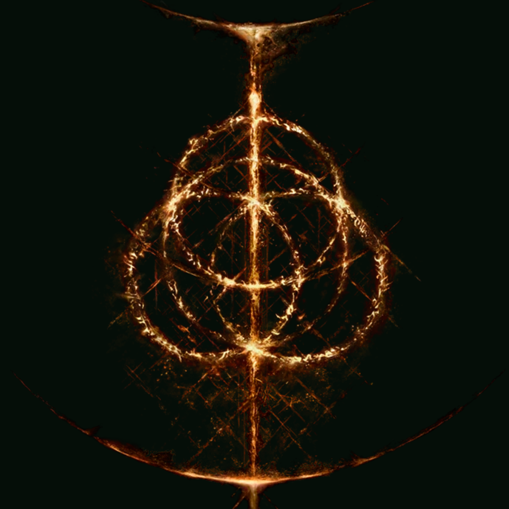
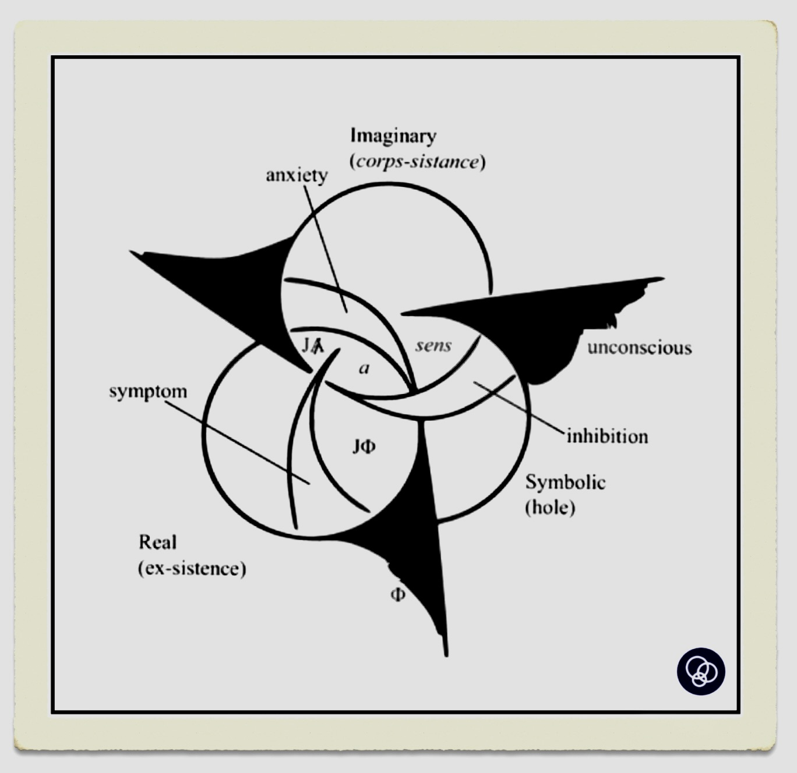

There are more then necessary “coincidences” between the lore of Elden Ring and Lacanian psychoanalysis. I am here to propose some “superficial hints” to serve as a preparation of a more rigorous and detailed analysis. This article is currently under construction and will enjoy updates in the future.
本文试图抛砖引玉，通过简单介绍《艾尔登法环》设定与拉康精神分析理论之间的的联系，来为此种视角下的深入的解析做准备。此文将不定期更新。
It can be easily linked to the Lacanian topology of borromean knot. However, the Elden Ring has one more ring (rune) in the middle that interlocks the other threes and overshadows the objet petit a.
艾尔登法环在某种程度上重复了拉康的“想象-象征-实在”拓扑——博洛米结。有趣的是在艾尔登法环这边，正中间有一个穿越“三界”的大环，在博洛米结那里正好遮盖了客体小a的位置。
| The Elden Ring | ISR |
|---|---|
 |
 |
It is the name given to the setting of Elden Ring, the realm where the story unfolds. The name itself is curious enough. Why it takes the plural form “lands”? And the lands between what? For the first question, I propose the perspective of “the barred One”, which marks an inherent impossibility to impose, or return to, a harmonic unity of the One Land, and set in motion the multiplicity of desires (recall demigod bosses the Tarnished should face). For the second question, I propose another Lacanian concept “between two deaths”, indicating that it does not know it’s already “dead” thus insisting on an uncanny “undead” dimension beyond life and death. Is not the undead-sublime body of the Tarnished, that fully revives at sites of Grace when killed by enemies (the only thing lost is the currency a.k.a. runes, which is another interesting lore), homogeneous here (let alone Godwyn and … the ErdTree)?
交界地是何者的交界处？英文的复数形式又有何意？对于前者，“两种死亡之间”这一概念可以试图解答——交界地并不知道自己已经死去，仍然坚持着某种“不生不死”的位面，并在某种程度上悬置起了因果链条。或可译为“阈限之地”，某个偿清结算一切事件将要发生，却被无限延迟，“终结”本身无法被终结。交界地如同褪色者不死的躯体一般，兼有崇高与可怖。对于后者，我试图引入“不可能的一”这一由齐泽克拓展的概念。
Ohh, Erdtree, great Erdtree. The Golden Order itself, unwavering, stretched to the sky. - Stranded Soul
The primordial form of the Erdtree is close in nature to life itself, and this spear, modeled on its crucible, is imbued with ancient holy essence. — Siluria’s Tree
“The Rune of Death goes by two names; the other is Destined Death. The forbidden shadow, plucked from the Golden Order upon its creation…” - Finger Reader Enia
The quote above from Enia already explicates an important relation: the Golden Order either forcloses or represses Destined Death (if the latter is more reasonable, then Destined Death is closely related to the primordial repression/void that becomes an absent focal point of drive/desire). It is precisely this forclosure or repression that endows the Golden Order with the “dignity” of death drive – the impossibility to end (put death to) the end (death) itself. In other words, the Destined Death is “the absolute Death”, “the forget of Death”, “the death of Death”, which witnesses a wired Hegelese “negation of negation”. Therefore, Destined Death is not externally opposite to the Golden Order, but is the very core of the Golden Order that splits it up from within.
The Tarnished who can see the Grace, Godwyn’s corpse, and the ErdTree are all the undead-sublime bodily manifestations of the Golden Order. According to Žižek, it can be connected to the Sadeian fantasy: in Sade’s work, the victum is indestructible – she can be endlessly tortured and can survive it; she can endure any torment and still retain her beauty as if above and beyond her natural body and natural death, there is another body possesed by her, composed of some other substance exempt from the vital cycle – a sublime body.
Destined Death (if understood precisely as death drive) is the failed self-cancellation of rebellion-founding power of Queen Marika’s Golden Order, the self-preservation of such power internal to the “well-established” Golden Order. One is tempted to draw the trinity of Marika-Radagon-Maliketh here. So what might serve as the ultimate emancipatory potential? Let’s wait for more analysis of different endings.
One more interesting point is the transition from impossibility to prohibition . As Enia says, it is the “forbidden shaddow”…So what is prohibited here? Is there a parallax gap between two names, one is the Rune of Death, the other is Destined Death (the prohibition “reifies” the impossibility and makes it an constitutive exception)?
黄金律法（Golden Order）如若被严格阐释为拉康意义下的符号秩序（Symbolic Order），那么命定之死即纯粹的死亡驱力，是真正的前符号的“主体”（大写的 Subject），而它的另一名字，根据齐泽克对谢林的解读，叫“自由”（大写的 Freedom），即未落入符号网络前的“无端的自由”。死亡驱力并非字面意义上的“驱使某物X走向终结的自然力量”，恰恰相反，它是这种“自然死亡”力量的黑格尔式的自我关联否定（self-relating negativity），即“死亡（这一机制）本身的死亡”——某物X自我终结/取消/实现/清债的失败/无限延迟，形成一种“不生不死”的、围绕着某个不可能性-虚空旋转的自我保存/坚持的力量。上述逻辑用集合论表示为 X = {1,2,3,...,X}，或者用拉姆达演算表示为 (lambda (x) (x x))，作为工具的“自然死亡机制”成为了目的本身（end-in-itself）——悖论在于：命定之死想要“杀死”的对象包括了它自身，而“自杀”的失败/废墟/剩余即是命定之死。
现在来重新审视“命定之死”这个名字的涵义：命定之死，即黄金律法“命中注定”不可消解的剩余-内核。玛莉卡女王的黄金律法创立之初必要借助“原初命定之死”的革命力量，而这种革命力量自我取消的失败而保存下来的剩余/残烬回溯地揭示了命定之死的驱力特性（游戏中用了类似火种的隐喻）。它在黄金律法中被压抑、禁止和封存，并非由于它是某个超越的外部禁忌力量，而正是黄金律法赖以建立的核心，用拉康的话来讲，就是“外隐”（ex-timate）。从命定之死“自杀”、消解的不可能性，即完美律法的不可能性，到篡夺命定之死的禁令，是由 到 的转变，也是驱力和欲望的视差。禁令的作用在于维持这样一种幻想：只要能夺取命定之死的力量，完美律法并非不可能。欲望总是错失，并永不满足，正如由玩家扮演的褪色者的死亡总是失败（每次“死亡”后都会从赐福中重生）、葛德文躯体的“自然死亡”永远缺失等；驱力则将此种围绕死亡之不可能性的反复失败的循环运动本身把握成一种剩余的满足和享乐，也是魂系游戏“倒错享乐”的来源（所以《艾尔登法环》是一款元游戏）。
On a night of wint’ry fog, the rune of Death was stolen. And the demigods began to fall, starting with Godwyn the Golden. — Elden Ring, Story Trailer
The status of Godwyn is probably the most theoretically curious one, I will just copy the story from wiki page: seeking to be free from her fate as a pawn of the Greater Will, Godwyn’s stepsister, Lunar Princess Ranni, stole a fragment of the Rune of Death from Maliketh. She imbued ritual daggers with the power of Death and gave them to the Black Knife Asssassins. The assassins slipped into the royal capital and carved the half-wheel centipede into Godwyn’s flesh as its counterpart was etched into Ranni. Both demigods died simultaneously but in opposite ways. Ranni perished in body but not spirit and Godwyn’s soul died while his body survived. (Isn’t it another version of the dialectic motto “two divides into one”?)
The wager of Ranni and her plot of The Night of Black Knives can be related to Caesar’s death (Hegel’s idea that history necessarily repeats itself, from Caesar-persona to caesar-title). Ranni’s goal is obviously to free herself from the Greater Will, while it can also be read as an attempt to bring a “proper death” to the Golden Order itself (however, in a more complicated way which I will call “suspending the suspension” or “delaying the delay”, according to Ranni’s ending Age of the Stars). Here Ranni and Godwyn co-play the role of Caesar – a Caesar plots his own death in order to solicit the historical necessity of a revolution. Here the repetition is transposed into a weired redoubled of Caeser figure, namely Ranni and Godwyn. What the Night announces and exposes is the fact that the Golden Order “is still alive only because it forgot that it was already dead”, just like what Caesar did to the Republic.
Here comes the more interesting twist of the lore: the Golden Order does not simply “know” it was already dead and then immediately “collapses” after the death of Godwyn. The Golden Order trys to repair Godwyn’s “survived body”, but the very repairing act makes Godwyn a real undead with forever proliferating flesh-and-blood (one cannot help relate to the proliferation of Capital right now). It is as if the undead body of Godwyn serves as a mirror of the undead-ness of the Golden Order, and tells the truth of it: Destined Death is internal to the Golden Order – it serves as the ex-timate, in terms of Lacan, of the Golden Order, not simply an external other.
After the night of the plot, Deathroot appeared in the Lands Between, and Those Who Live in Death soon followed. — Skeletal Bandit Ashes
The One “proper” Death is barred, so the multiplicity of different deaths flourished.
Circulation of Capital - returning to the ErdTree.
Why is “Greater” not “Great”? This is the question I came up at the first glance.